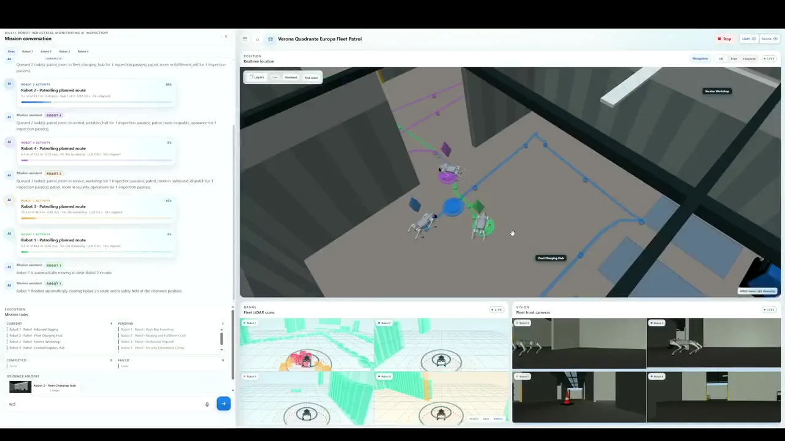

INTERPRETSemantic task proposal
Natural‑language
missions.
Deterministic
execution.
Traceable
evidence.
A local LLM translates natural-language objectives into constrained ROS 2 missions while deterministic software retains authority over routing, safety and execution.
HOW IT WORKS
From objective to executable ROS 2 tasks
OPERATOR OBJECTIVE
“Inspect the receiving dock for barrels, save the evidence and produce a findings report.”
VALIDATESchema, map and safety checks
EXECUTEBounded ROS 2 skills
MISSION OUTCOMETraceable evidence and findings
READY
TEAM
Duckster Team
THE CORE IDEA
Language proposes. Deterministic systems decide.
The LLM never receives a direct execution path to the robot. Every proposal passes through a strict contract and a guarded runtime.
Objective
The operator describes the desired operational outcome.
Interpret
A local LLM proposes supported semantic tasks.
Validate
Schema, map, route and readiness checks fail closed.
Execute
ROS 2 skills run with visible progress and human control.
Evidence
Findings retain mission, task, location, time and pose identity.
Criterion 01 · 15%Initiative Description
Initiative Description
and Value
Make recurring inspections of configured operational sites easier to request, supervise and document—without granting a language model physical control authority.

THE PROBLEM
Operational knowledge and robotic control speak different languages.
Facilities and operational sites require recurring inspection, patrolling and monitoring of rooms, workzones, equipment and infrastructure. Indoor settings include warehouses, industrial buildings and utility rooms; bounded outdoor settings include logistics yards, agricultural areas, industrial perimeters and infrastructure sites. Mobile robots can perform part of this work, but requesting a new mission typically demands ROS 2 knowledge, navigation interfaces, semantic maps, sensor configuration and robot-specific commands—creating a gap between the person who understands the operational need and the system capable of executing it.
Enable a non-robotics operator to request, supervise and document a bounded inspection of a configured operational site while deterministic software retains authority over physical execution and safety-related decisions.
OPERATIONAL EVIDENCE
Published sources establish the need to inspect
Warehouse-safety and service-robotics evidence supports the operational need. It is cited to show that these environments contain conditions worth inspecting—not to claim that this workflow improves them.
SourceReported findingHow it is used
OSHA warehousingIdentifies powered industrial trucks, material handling, hazardous chemicals, slips, trips, falls and robotics among warehouse hazards, and musculoskeletal disorders and workers struck by material-handling equipment among the most common injuriesEstablishes that warehouses contain conditions worth inspecting
U.S. Bureau of Labor Statistics, 2024A recordable injury and illness incidence rate of 4.8 cases per 100 full-time workers for warehousing and storageQuantifies the recurring operational exposure that inspection addresses
IFR World Robotics 2025Almost 200,000 professional service robots sold in 2024, with inspection and maintenance identified as a growing application groupIndicates an active professional-service-robot market, not demand for this product
These sources establish that warehouses contain activities and conditions worth inspecting, and that a professional-service-robot market exists. They do not by themselves prove that the proposed robotic workflow will reduce injuries or cost, nor do they establish demand for this particular product—both require customer discovery and a paid pilot.
TARGET CUSTOMER
A focused workflow for recurring site inspection
The initial customer hypothesis is a warehouse or logistics operator that performs recurring visual inspections and needs a consistent record of the result. The selected use case is supervised warehouse inspection—a concrete implementation example of the broader operational need, not the only intended application. The software is intended to complement, rather than replace, existing robotics, safety and operational procedures.
StakeholderOperational needApplication response
Operations, maintenance or safety operatorRequest and supervise an inspection without constructing ROS 2 commands or robot-specific routes.Natural-language mission requests, visible task progress, camera and LiDAR views, evidence review and independent human controls.
Warehouse or facility managerObtain repeatable inspection coverage and evidence associated with a known mission, location and time.Validated semantic tasks, configured viewpoints, mission history and evidence-based findings reports.
Automation or robotics leadIntroduce new missions without allowing generative output to bypass navigation and safety constraints.Strict task schemas, deterministic route planning, bounded execution and explicit readiness checks.
Robotics systems integratorConfigure the solution for another site, robot profile or inspection workflow without rewriting the complete application.Configuration-driven maps, rooms, inspection viewpoints, recognition targets, robot profiles and launch parameters.
PROPOSED INITIATIVE
Language proposes semantic work. Deterministic software decides.
An LLM-driven mission-control and evidence platform for Unitree Go2 quadruped robots, implemented as two ROS 2 packages and validated first in MuJoCo simulation. The principal contribution is the controlled integration of interpretation, planning, guarded execution, human authority and evidence management in one observable workflow—not the language model in isolation.
What the platform provides
- Natural-language interpretation using a repository-local Qwen3-4B model executed through llama.cpp
- Deterministic fallback handling for supported instructions
- A strict mission schema of predefined navigation, patrol, capture, inspection, return and reporting tasks
- Semantic resolution of named rooms and operational areas
- Deterministic route planning and guarded goal execution
- Independent Stop, cancellation, manual takeover and recovery paths
- Camera and LiDAR visualization through a browser interface
- Evidence identity across mission, robot, task, location, viewpoint, timestamp and pose
- Findings-report generation when explicitly requested
- Single-robot operation and scenario-bounded coordination of four simulated robots
What the model cannot do
- Publish actuator commands
- Invent physical coordinates
- Generate executable code
- Choose arbitrary filesystem paths
- Bypass configured mission constraints
Deterministic components validate each proposal, resolve physical details and decide whether execution is permitted. During execution the operator supervises from a unified browser workspace containing the semantic map, three-dimensional scene, live camera feeds, LiDAR visualization, task state, mission progress and collected evidence.
VALUE PROPOSITION
One observable workflow
The proposed value is a reduction in the technical effort required to request, supervise and document a robotic inspection. Operators communicate at the level of operational objectives, rooms and assets.
Turn an inspection objective for a configured operational site, expressed in natural language, into a guarded and traceable ROS 2 mission—without requiring the operator to write robot commands, and without granting the language model physical control authority.
Accessibility
Operational personnel can request supported missions without constructing ROS 2 command sequences.
Repeatability
Inspections use configured routes, viewpoints and task contracts rather than an informal sequence.
Human authority
Stop, cancellation, manual takeover and recovery remain independent of the language model.
Traceability
Evidence is associated with the mission, robot, task, location, viewpoint, timestamp and measured pose that produced it.
DIFFERENTIATION
Distinguished from representative alternatives
Each comparison identifies the typical limitation of an existing inspection approach and the specific way this initiative addresses it.
ApproachTypical limitationProposed differentiation
Manual inspectionRequires a person to perform and document every patrol directly.Supports repeatable simulated robot missions with automatically associated evidence while retaining human supervision.
Fixed scripted robot missionA changed objective may require an engineer to edit or trigger a different predefined sequence.Natural-language interpretation composes supported semantic tasks without changing physical execution interfaces.
Engineering-led ROS 2 controlRequires robotics knowledge from the mission author.Presents rooms, assets and objectives through an operator-facing mission workspace.
Unrestricted LLM-to-robot controlGenerative output may influence physical execution without a narrow authority boundary.Restricts the model to semantic proposals and keeps coordinates, routing, safety checks and execution deterministic.
Disconnected evidence workflowImages and findings may require manual association with their mission.Preserves evidence provenance across runtime, location, mission, robot, task, viewpoint, timestamp and pose.
Repository-local language and vision models reduce dependence on public inference services, supporting future on-premises evaluation where facility imagery, maps and operational instructions should remain inside the deployment environment. This is a prototype deployment characteristic, not yet a validated customer purchasing requirement.
VALUE MEASUREMENT
Benefits framed as testable hypotheses
Customer value has not yet been measured at a physical site. Challenge results for mission completion, intervention and visual classification belong to the KPI deliverable; customer labour savings, return on investment and physical-site performance remain future pilot measurements.
Value hypothesisEvaluation measureRequired comparison
Easier mission creationTime and operator actions required to request an accepted mission.Natural-language workflow versus the existing engineering-led procedure.
Reliable executionMission completion rate and bounded failure reasons.Repeated execution of a predefined mission suite.
Reduced supervision burdenHuman-intervention rate and intervention type.Interventions divided by attempted missions, with test interventions reported separately.
Reliable visible findingsFalse-positive and false-negative rates.Qualified perception output versus labelled ground truth.
Complete evidenceProportion of required viewpoints with attributed evidence.Expected viewpoint set versus stored evidence records.
Faster documentationTime from mission completion to an available findings report.Proposed evidence workflow versus the current reporting procedure.
SCALABILITY
Reuse the mission core; configure the deployment
New sites still require mapping, inspection design, configuration and site-specific safety validation, but they do not require a new mission-control application.
Shared across deployments
- LLM interface and task schema
- Mission state model and task compiler
- Routing and safety logic
- ROS 2 integration and operator interface
- Perception workflow and evidence pipeline
Defined for each operation
- Semantic maps and traversable regions
- Named rooms, zones and aliases
- Patrol seeds and inspection viewpoints
- Recognition targets and mission presets
- Scene assets and terrain information
- Robot, sensor and locomotion parameters
DimensionReusable mechanismCurrent evidence and boundary
Mission reuseShared semantic task schema and execution workflow.Supports navigation, patrol, capture, inspection, return and reporting.
Environment reuseConfiguration-driven maps, rooms, routes, viewpoints and targets.Demonstrated across warehouse, agricultural and scanned-location scenarios in the development repository.
Robot configurationRobot and locomotion profiles are separate from the language task model.Multiple simulation actors are selectable; physical portability is not yet demonstrated.
Fleet extensionNamespaces, task allocation, room ownership and route coordination.Demonstrated with four robots in one bounded MuJoCo warehouse; wider production scale is not established.
Model deploymentRepository-local, hash-verified language and vision assets.Supports repeatable local setup but depends on suitable host compute.
EVIDENCE BOUNDARY
An integrated simulation prototype—not a physical safety claim.
The repository demonstrates software reuse through configuration and controlled LLM-to-ROS 2 execution in MuJoCo, not production-scale autonomous deployment. The next validation step is to measure customer baseline effort and the engineering time required to configure an additional site and robot. Physical deployment still requires robot integration, localization, sensor calibration, hardware emergency-stop integration, cybersecurity and site-specific validation.
Criterion 02 · 20%Solution
Solution
Architecture
Semantic interpretation is deliberately separated from physical execution. The LLM may propose what the robot should do; deterministic components decide whether the proposal is valid and how it can be executed.
Authority path
From operator intent to guarded ROS 2 execution
Operator & Browser
Mission request, supervision, evidence, Stop and manual control
HTTP / WebSocket Gateway
Browser API, runtime identity and live-state distribution
Intent Interpretation
Qwen3-4B through llama.cpp with deterministic fallback
Schema & Mission Model
Task fields, rooms, ordering, instruction alignment, revision and export intent
Mission Executive & Skill Library
Revision-checked queue, finite task compilation and progress monitoring
Routing & Safety Layer
Route validation, clearance, bounded retry and cancellation
ROS 2 Nodes, Topics & Services
Navigation, perception, status, sensor and independent control interfaces
MuJoCo Robot Runtime
Motion, odometry, camera, LiDAR and navigation feedback
Independent Control Paths
Stop, cancellation, manual takeover and recovery do not wait for the LLM.
Fleet Coordination
Robot allocation, room ownership, route admission, peer coordination and charger reservations.
Perception & Evidence
Authorized visual analysis, qualification, identity-bound evidence and PDF reporting.
AUTHORITY BOUNDARY
Proposal authority is not execution authority
No model response can override a deterministic rejection. Operator safety controls remain available without inference.
COMPONENT RESPONSIBILITIES
Every authority boundary maps to implementation
The architecture separates presentation, interpretation, validation, execution and evidence so each concern can be tested independently.
LayerResponsibilityPrincipal implementation
Presentation and gatewayAccept operator requests; present mission state, sensors, evidence and human controls.
web/app.pyweb_gateway_node.pyIntent interpretationConvert natural language into a supported semantic mission proposal.
llm_planner.pyintent.pySchema and mission modelRestrict task types and fields, validate values and apply revision-checked mission changes.
schema.pymission.pyExecutive and skill compilerCompile accepted tasks into finite steps, manage lifecycle and record outcomes.
task_execution.pyexecutive_node.pyRouting and safetyResolve routes, check clearance and reject stale, blocked or unsupported goals.
planner.pyroute_alternatives.pynavigation_safety.pyFleet coordinationAllocate robots and coordinate rooms, routes, peers and chargers.
fleet_coordinator_node.pyfleet_scheduler.pyPerception and evidenceProcess authorized visual requests and preserve evidence identity, qualification and report provenance.
perception_worker_node.pyperception_validation.pyreporting.pyRobot runtimeSimulate locomotion and publish odometry, camera, LiDAR and navigation status.
simulator_node.pyfleet_simulator_node.pyMISSION PROCESSING
Seven constrained transformations
The language model participates in interpretation only. Every transition toward execution is governed by deterministic application code.
- 01
Bind context
Attach the request to the active runtime, location and mission revision.
- 02
Interpret
Qwen3-4B or the deterministic fallback proposes supported semantic work.
- 03
Validate
Reject unknown fields, invalid values, unsupported tasks, unresolved locations and unauthorized exports.
- 04
Check revision
Prevent a delayed planning response from overwriting a newer operator instruction.
- 05
Commit & compile
Atomically apply the mission patch, then convert tasks into finite skill steps.
- 06
Admit & execute
Validate routes, fleet conflicts and physical goals before ROS 2 publication.
- 07
Verify & attribute
Require fresh identity-matched feedback and bind evidence to runtime, robot, mission, task, location, viewpoint, time and pose.
ROS 2 INTERFACES
Explicit contracts across the mission path
Application state uses bounded structured messages; physical goals and sensors use standard ROS 2 message types.
InterfaceTypePurpose
/go2/demo/commandstd_msgs/StringTransfer the operator request from the gateway to the mission executive./go2/demo/statestd_msgs/StringPublish authoritative mission and task state./go2/nav/goal/go2/nav/statusPoseStampedStringTransfer validated navigation goals and return bounded navigation status./go2/demo/perception/request/go2/demo/perception/resultstd_msgs/StringExchange authorized and identity-checked perception work and results./go2/odom/go2/front_camera/image_raw/go2/lidar/pointsOdometryImagePointCloud2Provide robot pose, visual observations and simulated range measurements./go2/demo/stop/go2/nav/cancel/go2/recover_uprightTrigger servicesProvide stopping, navigation cancellation and recovery independently of inference./go2/demo/manual_override/go2/manual/cmd_velSetBoolTwistTransfer and release bounded manual-control authority.Fleet operation applies the same roles under robot-specific namespaces while the fleet coordinator maintains shared room, route and charging constraints.
FAIL-CLOSED DESIGN
Representative safeguards
When a mandatory precondition is not satisfied, work is rejected, quarantined, held, made unavailable or retried only within a finite bound.
Invalid model output
Unknown tasks, fields or out-of-range values produce no robot command.
Ambiguous location
Semantic references must resolve exactly or the operator receives a clarification.
Stale plan or runtime
Mission revision and runtime generation reject or quarantine delayed work.
Blocked or unsafe goal
The robot holds unless an eligible bounded route alternative remains.
Missing model or sensor
Readiness, freshness and timeout checks keep dependent functionality unavailable.
Fleet conflict
Room ownership, route admission and peer coordination make work wait, yield or reassign.
Unqualified perception
An unavailable or inconclusive result cannot become a positive or negative object claim.
Operator intervention
Stop, cancellation and manual ownership cancel or hold motion without LLM participation.
VALIDATION BOUNDARY
Repeatable simulation architecture—not certified functional safety.
ROS 2 Humble provides explicit process boundaries and standard interfaces; MuJoCo provides a reproducible environment for locomotion, navigation, camera and LiDAR integration. These controls constrain demonstrated simulation behavior, but they do not constitute physical-robot safety certification.
Criterion 03 · 20%Documented and
Documented and
Working Robotic Skill
inspect_room is a bounded composite skill for semantic navigation, visual observation and traceable evidence collection.
SKILL CONTRACT
Inspect a configured semantic area
Navigate through mandatory inspection viewpoints, collect authorized visual observations and retain evidence without allowing the LLM to generate coordinates or control commands.
{ "kind": "inspect_room", "room_id": "receiving_dock", "queries": ["barrel"], "capture_interval_s": 1.0, "max_frames": 12, "save_images": true }
INPUT CONTRACT
A narrow, validated task surface
The LLM can propose semantic fields only. Coordinates, inspection geometry, ROS 2 interfaces and export paths remain outside the model schema.
FieldTypeConstraint
kindConstantMust be inspect_room.room_idStringMust resolve to exactly one room in the active semantic map.queriesList of stringsOptional authorized visual targets; at most 32 queries and 160 characters per query.capture_interval_sNumberBetween 0.2 and 60 seconds; default 1 second.max_framesIntegerBetween 1 and 256; cannot remove mandatory viewpoint coverage.save_imagesBooleanDefaults to false; persistent saving also requires a valid configured destination.FINITE EXECUTION
Seven guarded stages
Cancellation can pre-empt navigation and perception without waiting for language-model inference.
- 01
Validate
Reject unsupported fields, values and semantic references.
- 02
Resolve
Load configured inspection viewpoints from the semantic map.
- 03
Plan
Compile complete spatial coverage and collision-aware routes.
- 04
Navigate
Publish validated goals and monitor status, obstruction and timeout.
- 05
Capture
Request identity-bound perception at the required pose and heading.
- 06
Verify
Accept observations only when every provenance field matches.
- 07
Finalize
Complete every viewpoint, clear active state and publish the result.
- Active runtime and validated semantic map
- Unambiguous room with usable viewpoints
- Fresh odometry from the active runtime
- Traversable routes to mandatory viewpoints
- Ready camera and perception channels
- No manual-control or recovery path owns the robot
- Success means every mandatory viewpoint was processed
- Evidence retains only its actual provenance
- Active goals and temporary execution state are cleared
- Failure stops further capture and records a bounded reason
- Cancelled or partial evidence remains explicitly incomplete
- Pending perception work is cancelled or quarantined
SAFETY CONSTRAINTS
What the skill is never allowed to bypass
These are software constraints for the simulation and do not replace physical emergency-stop or certified functional-safety systems.
Constrained model authority
The LLM cannot generate actuator commands, executable code, inspection geometry or ROS 2 interfaces.
Semantic and route validity
Unknown rooms, blocked goals and disconnected routes are rejected rather than approximated.
Complete bounded coverage
Frame preferences cannot remove required viewpoints; queues, retries and timeouts remain finite.
Runtime and evidence identity
Stale observations from another runtime, mission, task or viewpoint are rejected or quarantined.
Independent human authority
Stop, cancellation, manual takeover and recovery can pre-empt the skill without consulting the LLM.
Qualified and explicit outcomes
Unqualified observations remain inconclusive, while permanent images and reports require explicit authorization.
IMPLEMENTATION & VERIFICATION
From contract to automated evidence
The documented behavior is traceable to production modules and focused tests rather than existing only as presentation text.
ConcernProduction implementationAutomated evidence
Contract and mission state
schema.pymission.pytest_schema_and_mission.pyViewpoint coverage and compilation
task_execution.pysemantic_map.pytest_task_execution.pyExecution and goal cleanup
executive_node.pytest_navigation_stop_goal_cleanup.pyPerception qualification
perception_worker_node.pyperception_validation.pytest_perception_validation.pytest_perception_verifier.pyEvidence identity
perception.pyweb_gateway_node.pytest_evidence_identity_quarantine.pyCancellation and human control
executive_node.pyweb_gateway_node.pytest_runtime_stop.pytest_manual_control_gateway.pyEvidence-based reporting
reporting.pytest_reporting.pytest_report_progress.pyOUTCOME BOUNDARY
Mission completion is not perception confirmation.
A successful skill execution means the required navigation and capture procedure completed. An object is reported as confirmed, absent, candidate or inconclusive only according to the active perception qualification.
Criterion 04 · 20%End-to-End
End-to-End
Demonstration
A natural-language inspection objective becomes a validated mission, guarded simulated execution, traceable evidence and an operator-authorized report.
REPRESENTATIVE MISSION
Receiving-dock inspection
“Inspect the receiving dock for barrels, save the evidence and produce a findings report.”
The operator observes plan acceptance, route execution, camera evidence, mission progress and the terminal findings artifact from one browser workspace.
FULL RECORDING
Watch the complete demonstration
The uncut submission recording follows the whole operator journey in one continuous take: choosing an operation, creating and running a mission, reviewing evidence, coordinating a four-robot fleet and reusing the mission core across deployments.
Watch the full MP4 demo Hosted on the team’s corporate OneDrive. The chapters below are excerpts from this same recording.- Duration
- 15:01
- Resolution
- 1920 × 1080
- Frame rate
- 60 fps
- Format
- MP4 · H.264 / AAC
- File size
- 102 MiB
- Execution
- MuJoCo via ROS 2
RECORDED WALKTHROUGH
Explore the platform chapter by chapter
Five focused clips follow the same operator journey documented in the report, from choosing an operation to supervising multiple configured deployments.
CHAPTER 01 · 00:04
Choose the operational context
Start from the explicit Patrolling or Rescuing families, then move into the map of configured deployment locations.
Report coverage · Sections 4.1 and 4.2CHAPTER 02 · 01:14
Create and run a mission
See the single-robot workspace, bounded task sequence, live sensing and the opening stage of guarded inspection as one uninterrupted flow.
Report coverage · Sections 4.2–4.4CHAPTER 03 · 00:37
Review evidence and findings
Open the task-scoped evidence browser and inspect the findings report with its supporting observations and final report data visible.
Report coverage · Section 4.5CHAPTER 04 · 02:29
Coordinate a four-robot fleet
Inspect non-duplicated task queues, colour-coded route ownership, automatic clearance behaviour and the combined fleet camera network.
Report coverage · Section 4.6CHAPTER 05 · 02:22
Reuse the mission core across sites
Three concise excerpts show a crop survey, deployment selection and navigation on reconstructed terrain using the same supervisory model.
Report coverage · Section 4.7WHAT TO OBSERVE
One mission, end to end
The demonstration separates mission completion from perception confidence and preserves human authority throughout.
Natural-language request
An operational objective is submitted through the browser.
Constrained plan
The proposed tasks pass schema and semantic-map validation.
Guarded navigation
The robot follows deterministic routes with visible progress.
Visual evidence
Authorized targets are evaluated from configured viewpoints.
Findings report
An explicitly requested PDF retains the evidence provenance.
REPRODUCE
Launch the complete mission portal
source /opt/ros/humble/setup.bash
source .venv/bin/activate
source install/setup.bash
ros2 launch go2_ai_demo mission_portal.launch.py \
initial_location:=warehouseCriterion 05 · 15%KPIs and
KPIs and
Results
The final sealed campaign reports raw counts, fixed operational definitions, decision thresholds and an explicit simulation evidence boundary.
NOMINAL MISSION MATRIX
Five exact-wording trials in every scenario
Duration runs from browser instruction ingress to the authoritative terminal operation. Values remain separated by scenario because the work and runtime profiles differ.
ScenarioSuccessful / attemptedDuration: min / median / max
Receiving Dock barrel inspection with permanent images5 / 5 · 100%16.498 / 17.953 / 37.224 s
Maintenance Bay inspection for tool chest and air compressor5 / 5 · 100%72.848 / 77.332 / 83.594 s
Receiving Dock inspection with findings PDF5 / 5 · 100%146.635 / 150.708 / 152.161 s
Four-robot fleet warehouse inspection5 / 5 · 100%356.098 / 370.870 / 375.604 s
OPERATIONAL DEFINITIONS
Every result has a fixed denominator and decision rule
The workbook defines what counts, what is excluded and what result triggers investigation before interpreting the campaign.
KPI and formulaSuccess criterionMeasurement boundary
Successful nominal missions / attempted nominal missions100%; investigate any run below 100%All expected tasks, viewpoints and requested durable artifacts must succeed
Missions with ≥1 unplanned intervention / attempted missions0%; investigate any unplanned interventionPre-run setup, passive observation and planned safety actions are excluded
FP / (FP + TN)≤5%; investigate any safety-significant false positiveFinal labelled negative
barrel/barrels cases onlyFN / (FN + TP)≤5%; investigate any safety-significant false negativeFinal labelled positive
barrel/barrels cases onlyCompleted required viewpoints / required viewpoints100%; any missing viewpoint triggers reviewRequires an accepted evidence record for the configured inspection pose
Created requested images / expected requested images100%; any missing durable image triggers reviewOnly instructions that explicitly requested permanent image retention
Generated requested reports / requested reports100%; any missing requested PDF triggers reviewRecorder-boundary availability; not browser rendering or full generation latency
PRINCIPAL RESULTS
Measured outcomes with their denominators
The two runtime profiles remain distinct evidence groups; results are not pooled as though the configurations were interchangeable.
IndicatorMeasured resultInterpretation
Nominal mission completion5/5 in each of four scenarios20/20 across the sealed scenario matrix
Inspection evidence coverage125/125 viewpoints100% accepted, identity-bound evidence coverage
Permanent-image creation15/15 images100% for the scenario requesting retention
Findings-report generation5/5 PDFs100% for missions explicitly requesting a report
Report availability latency0 s for all 5 PDFsTerminal-state observation to durable copy-and-hash commit; not browser rendering or full generation time
Navigation replans / recoveries0 / 0 measuredAuthoritative completed-run counters; fleet logs retained one internal replan transition per run
PERCEPTION & SUPPORTING CHECKS
Qualified scope, stated narrowly
Classification results apply only to the authorized barrel class and equivalent barrels query in the frozen simulated scene and render configuration.
MeasureMeasured resultBoundary
Perception confusion matrixTP 10 · TN 10 · FP 0 · FN 0Two qualified query forms; five positive and five negative cases each
Precision and recall100% / 100%Qualified barrel scope only; other objects and physical imagery remain unqualified, and calibration/final-case disjointness is not fully evidenced
Fleet conflict-free completion5/5 · 100%Supplementary result limited to the tested four-robot fleet scenario
Instruction regression37/37 cases · 100%Supporting evidence; artifact did not match the active campaign configuration
Local-model instruction coverage24/30 · 80%Coverage within the supplementary regression; not a mission-completion KPI
Instruction latency6.679 s mean · 18.324 s maximumMeasured within the supplementary instruction regression
EVALUATION PROTOCOL
Results that can be audited
Measurements apply to MuJoCo simulation only and retain the exact runtime, hardware and trial conditions documented in the report.
Protocol elementRecorded conditionEvidence boundary
RuntimeROS 2 Humble · Python 3.10.12 · MuJoCo 3.10.0 · Ubuntu 22.04 under WSL2Simulation only
HardwareAMD Ryzen 7 3700X · 16 logical cores · NVIDIA GeForce RTX 3070 8 GiB · approximately 15.58 GiB RAMDocumented evaluation machine
Trial designFive exact-wording trials for each of four scenariosThree single-robot scenarios in one shared launch; each fleet trial used a fresh launch
ConfigurationSingle robot: guarded PGTT with locally qualified perception · Fleet: four robot-specific controllersResults from the two configuration groups remain separate
Frozen identity
8529f808adf42b3b3515627c3c3e9371455ba4cdGit commit recorded by the nominal packagesPackage integrity6/6 KPI package manifests passed integrity validationNo hash mismatch and no uncommitted raw-log tail; logical completeness remained false
INCOMPLETE ACCEPTANCE
Positive nominal verdict—not full automatic acceptance.
The planned Stop, manual-control and recovery suite was not executed; formal screenshot evidence and operator notes are incomplete; logical package completeness therefore remained false despite valid package integrity; no complete application-wide random seed was supplied; and no result establishes physical-robot safety, universal perception performance or customer-site performance.
Criterion 06 · 10%Business
Business
Case
Begin with a measurable simulation-first engineering pilot for a camera-instrumented site, then progress to site onboarding and recurring software revenue when physical validation justifies it.
COMMERCIAL RECOMMENDATION
A bounded site-inspection pilot
An eight-to-twelve-week engagement for one camera-instrumented indoor facility or one bounded outdoor area, representing up to three inspection workflows with configuration, validation, operator review and a physical-integration decision gate.
PROPOSED PILOT€25,000Simulation-first · one site
FIRST CUSTOMER & OFFER
Start where the workflow is frequent and measurable
The first customer is a facility, infrastructure or site operator already evaluating mobile robotics or working with an integrator. It is buying a bounded engineering pilot—not unsupervised autonomy.
A suitable first customer has
- One camera-instrumented or surveyable site with clearly defined inspection areas
- Recurring, documentable inspection workflows
- An operations or safety manager responsible for the process
- An automation team or robotics integration partner
- A measurable current process for comparison
What the engagement delivers
- One indoor facility or bounded outdoor area represented in simulation
- Up to three inspection, patrol or monitoring missions
- Semantic areas, viewpoints, targets, reconstruction inputs and reporting rules
- Natural-language mission and evidence demonstration
- Agreed KPI protocol and two operator review sessions
- A stop, repeat or physical-integration decision gate
COST BUILD-UP
How the €18,400 estimate is constructed
The planning model uses a fully loaded specialist project labour rate of €50 per hour. This is a budgeting assumption above reported EU and euro-area averages, not a quoted market rate. Hardware purchase and physical integration are excluded.
WorkstreamPlanning assumptionEstimated cost
Workflow discovery and requirements40 hours × €50€2,000
Site and mission configuration100 hours × €50€5,000
Testing and KPI measurement80 hours × €50€4,000
Documentation and operator training24 hours × €50€1,200
Project management and support36 hours × €50€1,800
Compute, travel and pilot materialsPlanning allowance€2,000
Contingency15% of €16,000 direct cost€2,400
Total estimated delivery cost280 labour hours plus allowances€18,400
COMMERCIAL BENCHMARKS
Directional checks—not price or demand validation
Public comparables show that recurring robotics and spatial-data services exist, but they are broader offers with different cost structures. Revenue is not treated as a profitability proxy.
BenchmarkReported reference pointHow it is used
Eurostat 2024 labour costs€33.5 EU average · €37.3 euro-area average · €10.6–€55.2 country rangeA directional anchor for the €50 specialist budgeting assumption
Knightscope 2025 investor presentationUS$1–$11 per autonomous-security-robot operating hourSupports a recurring-service comparison only; the offer includes hardware and services
Recurring service modelsKnightscope 2025 and Matterport 2024 report material service or subscription revenueEvidence of existing commercial models, not demand validation or a forecast for this application
GROWTH PATH
Evidence before expansion
Commercial assumptions remain transparent until customer interviews, quotations and physical-site measurements replace them.
Inspection pilot
Represent and measure the customer’s bounded workflow in simulation.
€25kSite onboarding
Configure physical interfaces after technical validation.
€8kAnnual platform
Licence the reusable mission-control software and support.
€16k / yearUNIT ECONOMICS
Service revenue first; recurring revenue after validation
Early pilots carry substantial engineering effort. Site onboarding and annual software revenue become relevant only after a successful technical decision gate.
Commercial itemRevenue and direct costDirect contribution
Simulation-first pilot€25,000 revenue · €18,400 cost€6,600
Production-site onboarding€8,000 revenue · €4,000 cost€4,000
Annual software licence€12,000 revenue · €2,000 cost€10,000
Annual support package€4,000 revenue · €3,000 cost€1,000
Annual recurring package€16,000 revenue · €5,000 cost€11,000
PRODUCTIZATION & OPERATING MODEL
Separate sunk prototype effort from forward investment
The three-year model adds the work required to turn the current demonstrator into a supportable product and keeps fixed operating costs separate from delivery costs.
Model elementPlanning assumptionTreatment
Existing prototype effort160 person-daysUnverified reconstruction; treated as sunk effort in the forward model
Production hardening120 person-days × €400 per day€48,000 year-zero investment
Fixed operating overhead€20,000 · €25,000 · €30,000Applied in years one, two and three respectively
Third-party LLM consumption€0 per mission in the base caseLocal model; electricity and platform compute remain in other cost allowances
THREE-YEAR SCENARIOS
Transparent consequences, not sales forecasts
Each scenario applies the same pilot, onboarding and recurring-package unit economics. Net cash includes the €48,000 production-hardening investment and three years of fixed operating overhead.
ScenarioThree-year activityIllustrative outcome
Conservative6 pilots · 2 new sites · 1 renewal€214,000 revenue · −€42,400 net cash · no break-even within 36 months
Base19 pilots · 10 new sites · 5 renewals€795,000 revenue · €207,400 net cash · break-even around month 18
Upside38 pilots · 19 new sites · 12 renewals€1,598,000 revenue · €544,800 net cash · break-even around month 9
ILLUSTRATIVE CUSTOMER VALUE
€43,750 baseline → €5,875 net annual benefit
Assume a camera-instrumented facility performs four 1.25-hour inspection rounds per day, 250 working days, at €35 per hour. A 50% reduction in active human time saves €21,875; after €16,000 annual software and support, €5,875 remains. Under these assumptions, the €8,000 onboarding fee pays back in approximately 16.3 months. Compatible robot hardware and physical integration remain excluded.
SENSITIVITY
The result depends most on realized value and delivery efficiency
The workbook varies one assumption at a time. These checks expose where customer economics or vendor contribution can fail before commercial validation.
VariableDownsideBase → upside
Customer active-time reduction35% → −€688 annual net benefit; no payback50% → 16.3-month payback · 65% → 7.7 months
Specialist labour rate€60/hour → €21,620 pilot cost · €3,380 contribution€50/hour → €6,600 contribution · €40/hour → €9,820
Paid LLM usage€0.25 × 1,000 missions/site/year → €10,750 recurring contributionLocal base case at €0/mission → €11,000
Pilot price€22,000 → €3,600 contribution€25,000 → €6,600 · €28,000 → €9,600
HARDWARE & MAINTENANCE BOUNDARY
Physical deployment is an optional, unquoted budget
The simulation-first pilot includes a €2,000 compute, travel and materials allowance. A physical deployment requires a separate site-specific quotation and is excluded from vendor forecasts and the compatible-hardware customer ROI case.
€35,000 placeholder subtotal
- Robot platform: €25,000
- Sensors: €3,500
- Edge computer: €2,000
- Network and safety equipment: €4,500
€3,500 per year
A 10% annual maintenance placeholder is applied to the optional physical-hardware subtotal. All component values are planning assumptions, not supplier quotations.
SCALING LOGIC
Standardize configuration before scaling sales
The business becomes scalable only when later sites reuse the mission contracts, interface and onboarding process instead of becoming independent engineering projects.
- Configuration-driven maps and viewpoints
- Reusable mission and skill contracts
- Standard indoor and outdoor inspection mission templates
- Repeatable onboarding and acceptance procedures
- Annual site licences and support packages
- Delivery through integration partners
- Customer willingness to pay
- Hours required for site configuration
- Mission completion and intervention rates
- Qualified perception performance
- Operator time saved against baseline
- Support effort after initial delivery
RISKS & DECISION GATES
Do not scale ahead of evidence
Each material risk is paired with evidence and a concrete condition for proceeding.
RiskEvidence requiredDecision gate
Insufficient customer needInterviews and measurement of the current inspection workflow.Do not start without a frequent and measurable problem.
Low willingness to payA priced proposal reviewed by a qualified customer.Proceed only with a paid or explicitly funded pilot.
Excessive delivery effortActual mapping, configuration, testing and support hours.Continue only if later sites reuse substantial prior work.
Physical integration riskRobot interface, localization, sensors and emergency-stop validation.No production-readiness claim before physical acceptance testing.
Outdoor operating conditionsWeather, lighting, terrain, communications and capture coverage.Approve outdoor use only after site-specific environmental and safety validation.
Unqualified perceptionCustomer-site ground truth and measured false-positive and false-negative results.Keep findings advisory until each required class passes qualification.
Licensing and security gapsReview software, models, assets, data handling and deployment security.Resolve material issues before external commercial deployment.
These figures are planning assumptions, not customer quotations, signed revenue or validated forecasts. The team has no production-readiness evidence or supplier quotations. Robot hardware, physical integration, certification, insurance and maintenance are excluded unless explicitly shown as optional placeholders.